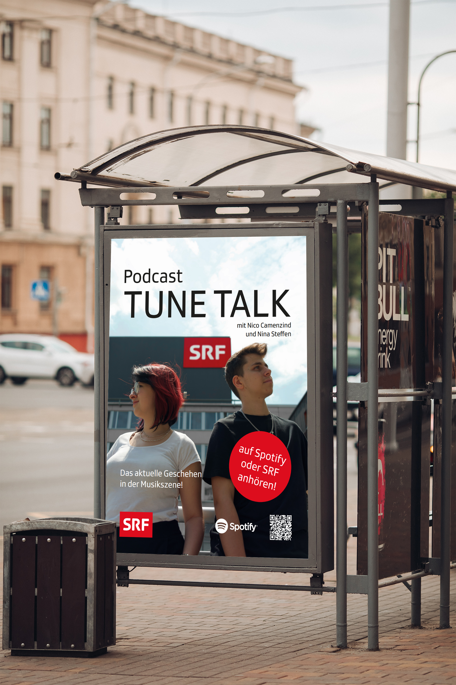

Der neue Podcast Tune Talk ist jetzt auf Spotify und SRF. Nina Steffen und Nico Camenzind verkünden 2-mal wöchentlich die News der Musikszene. An der Friday Release Party werden jeweils jede Woch den neu realsten Song vorgestellt. Oft werden dafür sogar bekannte Künstler eingeladen. Nach der folge Wünschen wir euch viel Spass bei selbst hören, auf unserer Friday Release Party Playlist. Monday News Show, findet immer am Montag statt. Hierbei behandeln wir die dramatischen News der Musikszene wöchentlich. Bei der länge dieser Folge kommt es ganz auf die Themen an. Wir freuen uns auf dich und hoffen, dass du mal reinhörst.